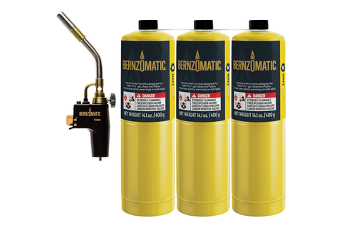
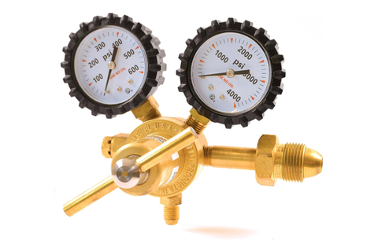
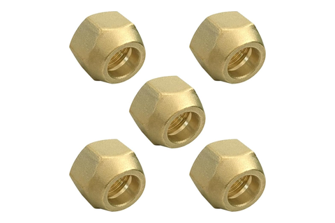

Braze bench
BCuP-5 dry, under flowing argon · the two joints that close the loop
Tool station · 06/13Kitchen edition
Nothing here is fluxed. Every joint in the
loop is copper to copper, so the phosphorus in BCuP-5 does the fluxing and
the rod goes on dry. The torch reaches ~800 °C
against the alloy's 802 °C liquidus, and argon
moves through the open loop the whole time — one flow, sweeping
residual R-600a ahead of the flame and blanketing the factory drier's
desiccant.
a few PSI, flowing, into the BPV31
open from the first cut until vacuum begins at RL-06
One flow, two jobs — it sweeps residual R-600a ahead of the heat
and keeps the factory drier's desiccant dry.
PrepRL-04 · RL-05
3M Scotch-Brite maroon
cut into strips · ~2 of 20 pads per build
Bright copper on both tube ODs and inside every socket
nothing else goes on the joint
The filler wets bare metal. No flux, no paste — the rod arrives
at clean copper or it does not wet.
Suction jointRL-04
TS8000 + MAP-Pro
BCuP-5 15 % Ag · 1/16″ rod
The ACR slip coupling, sweat × sweat
both mouths, dry, under the flowing argon
Coil outlet into the factory suction line. Both lines are
1/4″ OD, so the coupling is a direct sweat
join — no adapter.
Cap-tube jointRL-05
Same rod, same flame
~10 g per build, ~3 builds per rod
The swaged mouth of the coil-inlet stub
collapsed onto the cap tube at TB
The last joint in the loop. Once it closes, the only way back inside
is the BPV31.
⚠
Vented is not
empty. R-600a stays dissolved in the compressor oil and pooled in the
loop's low spots. No flame until the charge is vented, the loop reads
atmospheric, and argon is moving.
⛔
Never break
the argon flow — first cut at RL-03 through vacuum-on at RL-06.
It is the fuel sweep and the drier's dry blanket at once.
One cylinder, two regulators. The RHP400 swaps on
for the loop purge; the RX Weld regulator is the welding side, at LW.
No nitrogen cylinder anywhere in this build.
Have in hand

Bernzomatic TS8000torch head + MAP-Pro

Uniweld RHP400argon, purge side

Joywayus1/4″ SAE flare nut
The RHP400 is the loop's regulator. It swaps onto
the same cylinder the laser welder runs on — the RX Weld regulator
stays with the welding side, at LW.